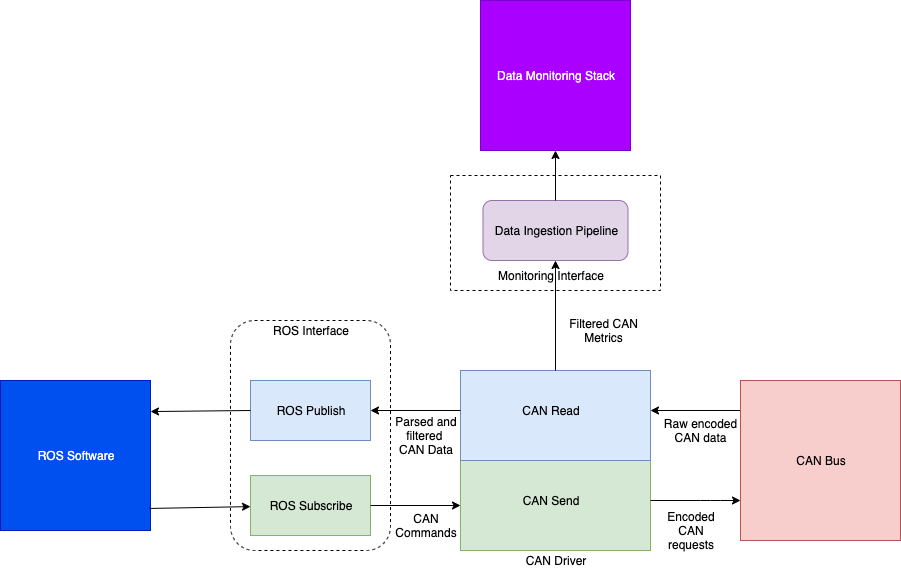

What is Midnight Sun?
WATOnomous is a student design team that creates a Level 4 Autonomous Vehicle to compete in the SAE AutoDrive Challenge. We are currently in Year 4 of the Autodrive Challenge which is an extension of Year Three and focuses on tasks such as going through roundabouts and detecting moving objects.
WATonomous Official WebsiteMy Work on Midnight Sun
ROS Interface
Currently, I am the manager for the Telemetry/CAN Interface team. Our current project is to get the ROS and CAN interface to work. Below is a diagram of the pipeline for our data.
Basically, we need to be able to control and monitor our autonomous car using CAN messages. This means we need to be able to both send CAN messages and recieve them. Our software team however uses ROS and sends ROS messages to control the car. Thus, us being the electrical team, we must act like the middleman. We have a ROS interface that subscribes to certain topics that our path-planning Team creates so we can recieve their messages (eg steer 45 degrees). We convert their ROS messages to CAN messages using a DBC file supplied to us by GM so that the car can understand what we want it to do. The Telemetry/CAN team also helps track the messages that are sent on the CAN bus. We recieve CAN messages and decode them (again using the DBC file). These messages are then sent to ROS topics that the path-planning team may use and it is also sent to our data monitoring stack (telemetry system).